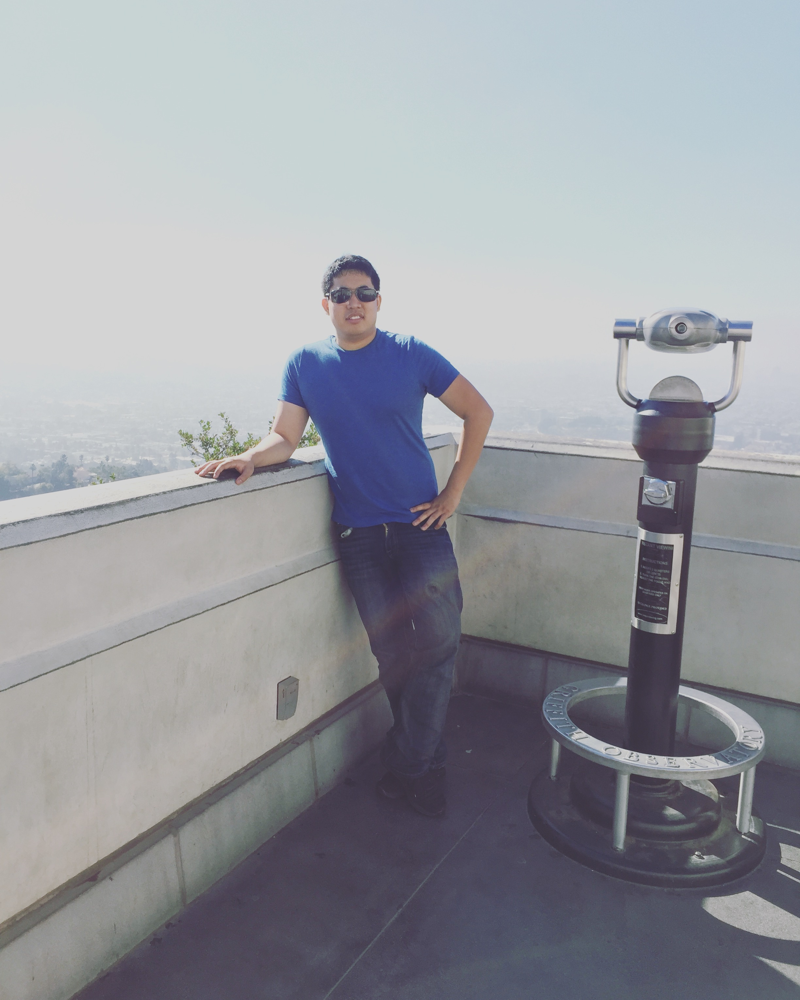

DOUGLAS
RUTNARAK
About Me
Greetings! My name is Douglas Rutnarak. I am a full stack web developer from New York City. I recently graduated from the New York Code and Design Academy with a focus on Javascript and Ruby on Rails. I wanted to become a web developer because I have a passion to build. In my previous life (or career) I was a paralegal. Though I enjoyed the research and the interpretations one has to do as a parelgal, my love for building and constructing couldn't be beat. However, I am thankful to carry on my research skills in researching how to build so that is a plus.
Connect with me on my Linkedin and my Github!
Email Me: dougrut1234@gmail.com